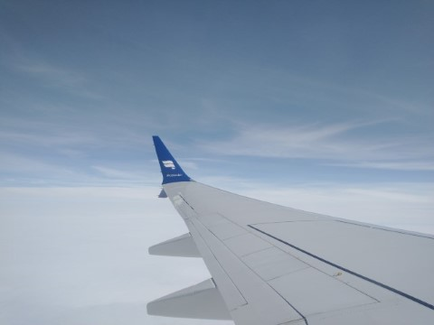
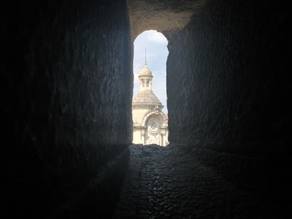
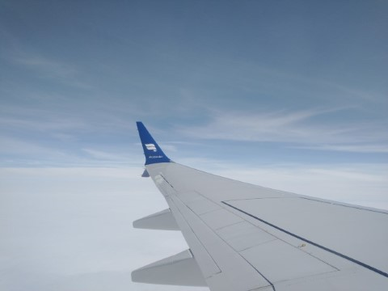
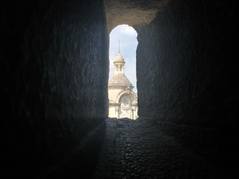

⮝ Pairi Daiza, Belgium
ⓘ Info
About me
Salut! Hola! Hey! I'm Louis Lapp, a senior at the Baltimore Polytechnic Institute in Baltimore, MD. Check out some of my interests, hobbies, and more!
ⓘ Info
Template ü°Ω
About the website
This site was designed as a template for a modern, tile-based website. It features horizontal scrolling and vertical navigation for a gallery-like experience. You can adapt the website for your needs using the template link above. If you have any questions or suggestions for improvement, please email 2louislapp@gmail.com. Thanks!
Interest
Hobby
Coding
My first experience with coding was with an Arduino microcontroller, where I made a variety
of projects, from a security system to memory game. As I got more and more into coding, I tried out Python,
HTML, CSS, and JavaScript for various purposes, whether for coding models to forecast Arctic sea ice, custom
websites, or even adaptable Google Sheets documents. I find coding a particuarly fun hobby because of its
applicability in my many interests and the satisfaction of building something meaningful.
⮝ Grand Canyon of Pennsylvania
Interest
Hobby
Environment
My love for the environment grew from a subcouncious appreciation for the outdoors. When I learned more and more about environmental degradation, I grew increasingly passionate of conservation. I've grown particularly interested in rainforests, the Arctic, local deciduous forests, and developing green spaces in my city.
⮝ 40 mile trek to New Freedom, PA
Hobby
Mountain biking
Whether at nearby parks (like Gunpowder, Loch Raven, and the NCR trail) or a local trail, I
love mountain biking for the adrenaline, difficulty, and of course, the beautiful views.

⮝ Cascade Falls Trail, Gunpowder, MD
Hobby
Hiking
Oregon Ridge, Soldier's Delight, and Lake Roland are some of my favorite places to enjoy
the forests (or serpentine barrens) of Maryland.

Interest
Hobby
Space
Star Trek was the first factor attracting me to "the final frontier". As my interest
extended beyond the television, I began migrating outside at night to look at the mysterious, yet fascinating
realm of outer space. My obsession with the night sky proved to be a gateway into many other interests, like
rockets, astronomy, and astrobiology.

Hobby
Star gazing
After long nights of completing homework, I love heading outside to stare up at the night
sky. I love imagining what we may find up there, and asking questions that I hope one day to know the answer to.
Looking at the sky puts both time and space into a vastly different perspective, one that serves as a temporary
relief from the stresses of school or the excesses of a day. In the future, I'll buy a powerful telescope so
some of the mysteries I can only know about on a computer become visible to me.

Hobby
Board games
I enjoy board games involving intricate strategies, where careful planning is rewarded with territory, economic empires, or interplanetary resources. Scythe, Dune, and Brass: Birmingham are some of my favorites.

Hobby
Reading
I love to read books that take me to new places and give me an alternate reality I can bury myself in. Recently, I've read the Dune Trilogy by Frank Herbert, Today We Live by Emanuelle Pirotte, and Vingt Mille Lieues Sous Les Mers by Jules Verne.

Hobby
Sports
Soccer, badminton, tennis, basketball, and pétanque are amongst the sports that I enjoy
playing with my brother, family, or friends.

Interest
Hobby
Photography
Every time I would see a PC's lockscreen, I would see a beautiful image of some remote landscape or remarkable formation of some sort. I soon wanted to take beautiful images myself of places or objects of personal value, and from this my interest in photography grew. Today, I update my slideshow of pictures from travels, hikes, or cool-looking things weekly! You can check out the images I currently have on my slideshow in the Photos ü°Ω tab.
ⓘ Info
Research
Working with Dr. Jianwu Wang and Sahara Ali from UMBC's Information Systems Department and iHARP, I've worked on several research projects. Check them out!
⮝ Process schematic
10-11/2022
üêç Python
R
Paper
ü°Ω
Code
ü°Ω
Exploratory Data Analysis on Arctic Environmental Variables
As a preliminary step to my next project, I conducted an exploratory data analysis on a
dataset of Arctic environmental variables spanning 1979 to 2021. I explored Fourier frequencies, correlations,
long-term trends, distributions, amongst other characteristics to guide the development of a model to forecast
Arctic sea ice extent. I also examined relevant literature to link the observed patterns to previously-studied
physical phenomena.
.png)
⮝ ISEF Poster
12/2022 - 3/2023
★ 1st Place Overall Morgan Science and Engineering Fair
★ ISEF Finalist
★ UMBC Information Systems Symposium Honorable Mention
üêç Python
ISEF Poster
ü°Ω ISEF
Submission ü°Ω
Integrating Fourier Transform and Residual Learning for Arctic Sea Ice Extent Forecasting
In this project, I developed a pipeline that essentially removes periodic trends in data.
Ultimately, the data was reduced to 'noise', or seemingly random deviations from the expected trends. I then
trained machine learning models on those deviations. I applied this methodology to both a 2D (numerical values)
and 3D (images) datasets. I found that this methodology was more efficient, accurate, and reliable on the
long-term. However, this model did not forecast Arctic sea ice concentration (a more specific measurement of sea
ice). In my future project, I will address this limitation.
Because this project's article is
undergoing peer review, copies of the pre-print and code are not publicly available.
⮝ 01/1979 Collage of Arctic Environmental Variables
ⓘ In progress
7/2023 - Present
üêç Python
Layered Spatio-Temporal Machine Learning Model for Arctic Sea Ice Concentration Forecasting
In this project, I will develop a model that decomposes the various maps of Arctic
environmental variables into space-time layers, where models will be optimized for specific geographical regions
and time lags. So far, I've coded a 2D/3D/4D image collage maker, where users can easily visualize their
datasets in Python. I'll use this program to explain the dataset and visualize my results once I finish them.

HTML
CSS
JS
4-5/2021
Files ü°Ω
Visit ü°Ω
CardBoard
I designed CardBoard in 10th grade to help my class prep for the AP Government test. I
noticed (as did many of my classmates) that the current studying go-to, Quizlet, often didn't provide enough
information on the topics. Instead of memorizing words and definitions, CardBoard linked topics together
succinctly, with an easy-access dictionary available in case more information was required.
For those
interested in knowing what's under the hood:
- All website content is stored in JSON files to make adding folders or 'cards' easier and faster
- JavaScript converts the JSON files into HTML
HTML
CSS
JS
üêç Python
4-5/2021
Ingenuity Symposium WebConnection
I designed the WebConnection as part of my initiative to modernize the Ingenuity Research
and Innovation Symposium. Whether for people interested in the topic or for sponsors interested in seeing the
impact their funding has on the program, users could access the specific research work students have completed
over the year from QR codes included in the symposium program. In addition, WebConnection made the tasks of the
symposium organizers significantly faster and less-prone to error thanks to task automations.
For
those interested in knowing what's under the hood:
- Student information and work is inputted into a Google Sheets
- A python code generates all QR codes (a process that used to take hours), website bit.ly links, and a JSON file (saved to an online service)
- The website automatically fetches data and generates the website from the JSON file with a secured file transfer system

HTML
CSS
JS
9-11/2021
ⓘ Under rework
Files ü°Ω
VectorPass
I designed VectorPass in 10th grade as an alternative to the hall pass system at my school,
since few students were signing out and managing time out/logs became increasingly difficult. In response to
this, I started designing an online system that uses QR codes to quickly sign people in and out, keeping a log
along the way. Unfortunately, I never finished this project due to time constraints, but our school has recently
adopted an online system!
For those interested in knowing what's under the hood:
- Student identity is verified using Google OAuth2
- A dashboard, log outs, pass requests, and admin tabs are available depending on account access
Google Sites
2021
Website ü°Ω
Climate Action Council Main Website
To raise awareness of climate and the impact students at poly can make during online learning, I made this website for the Climate Action Council - I built the structure and much of the content of this website, including the activities and curriculum. Check out some of the work we've done in the Impact tab!

 


